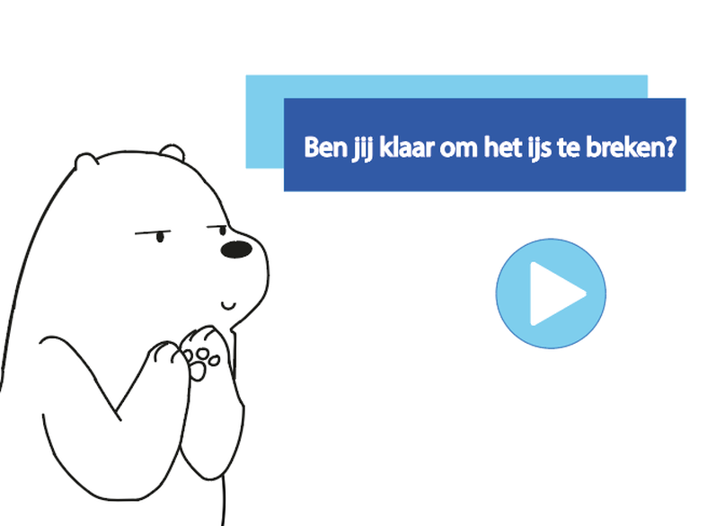
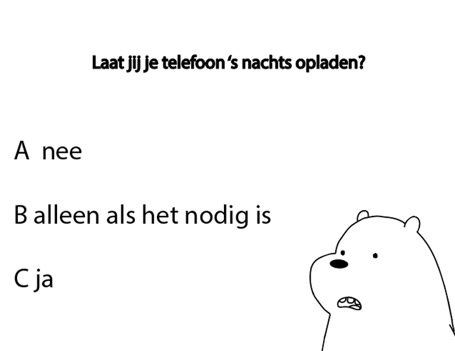
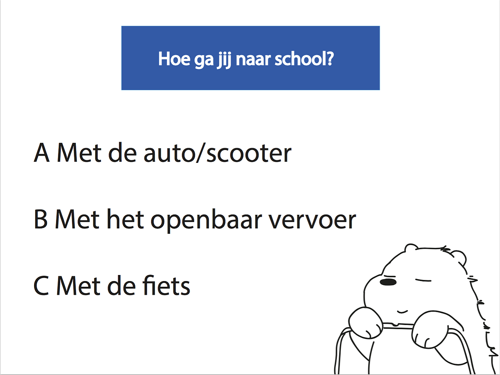

WNF

De opdracht is het ontwerpen van een product die het werven van vrijwilligers voor jouw gekozen stichting stimuleert. Het is belangrijk dat jouw stichting gebruik maakt van vrijwilligers en dat het product zich in een publieke ruimte moet bevinden. Ook is het belangrijk dat deze ruimte de plek is waar jij jouw doelgroep zal gaan aantreffen. Het product moet gebruikt worden op een evenement, veelal in de buitenlucht. Ook moet het product gebruikers overhalen daadwerkelijk zich in te schrijven, het product moet dus enthousiasme oproepen.
De weken moesten goed benut worden. Mijn gekozen stichting was het WNF met als gekozen evenement het WNF Earth Hour. De volgende stap was vooral grondig onderzoek doen naar de stichting. - Waar houdt de stichting zich mee bezig? - Wat voor vrijwilligers wilt de stichting trekken? - Wat is de doelgroep? - Waar vind het evenement zich plaats?
(Uiterwerking pad van de schermen)
Mijn product "Klaar om het ijs te breken?" is een quiz die ervoor zorgt dat de gebruiker bewust word van zijn/haar gebruik van energie, maar ik wil hier achterkomen zonder dat de gebruiker weet waarmee hij/zij bezig is. De gebruiker wordt door de quiz geleid door een ijsbeertje. De gebruiker zal een aantal persoonlijke vragen beantwoorden die te maken hebben energiegebruik. Wanneer de gebruiker de quiz heeft afgerond zal er een uitslag komen. Deze uitslag zal de eerste stap zijn naar het aanmelden als vrijwilliger. - Gaat de gebruiker bewust om met energie en wilt hij/zij deze boodschap doorgeven of - Gaat de gebruiker slecht om met energie en wilt hij/zij er een verandering in brengen?
  